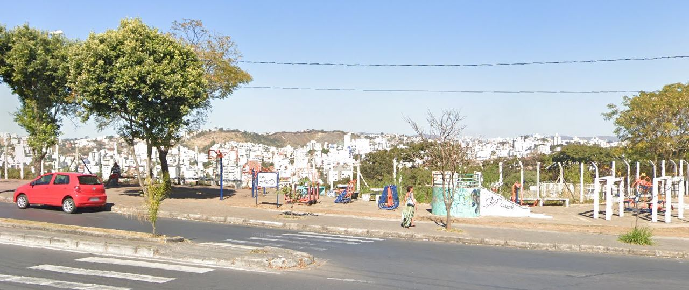

Parquinho Do Bairro
Temos também o parque do bairro, que possui alguns brinquedos para crianças e também possui alguns equipamentos para pessoas se exercitarem. Ele se localiza ao lado de um supermercado ou seja é um lugar de bastante movimento.
Aqueles que puderem contribuir conosco podem levar suas doações até os pontos de apoio.
Assados no bafo: Rua Expedicionário Jordelino Alves, 62 - Santa Terezinha (a partir das 11:00 à 14:00)
Ponto de apoio Confisco: R. K 302 B. Confisco
O evento ocorrera na próxima terça feira(12)
Essa informação foi noticiada no instagram da Associação de Moradores do Bairro.
Clique aqui para acessar
Temos também o parque do bairro, que possui alguns brinquedos para crianças e também possui alguns equipamentos para pessoas se exercitarem. Ele se localiza ao lado de um supermercado ou seja é um lugar de bastante movimento.